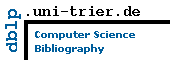

Etudes suivies et diplôme obtenus
Thèse de Doctorat en Informatique
Novembre 2010 - Septembre 2014
Diplôme obtenu : Thèse de doctorat en Informatique en cotutelle entre la Faculté des Sciences de Tunis et à l’Université de Strasbourg.
Titre
Méthode collaborative de segmentation et classification d’objets à partir d’images de télédétection à très haute résolution spatiale.
Mention
Très Honorable .
Etudes Universitaires du 3ème cycle
Septembre 2007 - Janvier 2009
Diplôme obtenu : Mastère en informatique
Réussite à la première année en juin 2007 : Validation de modules théoriques.
Validation du Module d’Initiation à la Recherche et Pédagogie (MIRP).
Soutenance du mémoire de mastère en janvier 2009.
Titre du mémoire
Intégration des informations et des connaissances structurelles dans la classification des images satellitaires forestières haute résolution.
Mention
Trés bien.
Etudes universitaires du 2ème cycle
Septembre 2004 - Juin 2006
Diplôme obtenu Maîtrise en Informatique à la Faculté des Sciences de Tunis.
Mention
Assez Bien.
Réalisation du d’un projet de fin d’études soutenu en juin 2006 avec la note de 17/20.
Titre du projet de fin d’études
Conception et réalisation d’un système dédié aux soins ambulatoires dans le cadre d’une application hospitalière.
Organisme d’accueil
International Technology Information.
Etudes universitaires du 1er cycle
Septembre 2001 - Juin 2004
Diplôme obtenu Diplôme premier cycle universitaire à la Faculté des Sciences de Tunis.
Mention
Passable.
Baccalauréat
Juin 2001
Lycée
2 Mars 1934 à El Ouerdia.
Section
Mathématiques.
Mention
Passable.
ACTIVITES DE RECHERCHES
Travaux De Thèse
Novembre 2010 - Septembre 2014
Thèse de doctorat en Informatique en cotutelle entre la Faculté des Sciences de Tunis et à l’Université de Strasbourg.
Titre
Contexte
Thèse en Co-tutelle entre la Faculté des Sciences de Tunis (FST) et l’Université de Strasbourg (UDS)
laboratoires
- Laboratoire Informatique Programmation, Algorithmique et Heuristiques (LIPAH) à la Faculté des Sciences de Tunis (FST), Tunisie
- Laboratoire des sciences de l'ingénieur, de l'informatique et de l'imagerie (ICube) à l’Université de Strasbourg, France
Encadrements
- FST (LIPAH) : Prof. Khaled BSAÏES, M. Atef HAMMOUDA
- UDS (Icube) : Mme. Aline DERUYVER et M. Cédric WEMMERT
Mots clés
Classification, Segmentation, Reconnaissance des formes, Télédétection, Image haute résolution, Collaboration.
Résumé
Nous avons introduit une nouvelle approche hiérarchique sémantique qui présente une collaboration entre une segmentation par croissance sémantique et une classification. Cette approche présente une solution au problème que représente l’aspect séquentiel des approches d’analyse d’images orientées objets. Deux adaptations de l’approche sur les classes « route » et « bâtiment » ont été présentées. Nous avons aussi présenté un système multi agents évolutionnaire intégrant une collaboration régions-contours. Ce système a permis de profiter des avantages des systèmes multi-agents et des algorithmes évolutionnaires afin d’assurer un traitement local et auto-adaptatif.
Travaux de Mastère
Septembre 2007 - Janvier 2009
Titre du mémoire
Mention
Trés bien.
Contexte
Mastère de recherche à la Faculté des Sciences de Tunis.
Spécialité
Traitement d’image.
Laboratoire d’accueil
Laboratoire Informatique Programmation, Algorithmique et Heuristiques (LIPAH).
Directeur du mémoire
M. Atef HAMOUDA, Maitre assistant (Faculté des Sciences de Tunis).
Président du jury
Khaled BSAIES, Professeur (Faculté des Sciences de Tunis).
Rapporteur
Sadok BEN YAHIA, Maitre de conférence, (Faculté des Sciences de Tunis).
Publications
Mots clés
Classification, Connaissances structurelles, Couronnes d’arbres, Indice de forme, Segmentation, Très haute résolution.
Résumé
Nous avons présenté une approche de classification qui intègre les informations et les connaissances structurelles dans l’interprétation automatique des images satellitaires forestières haute résolution. Nous avons procédé à travers trois phases de traitement. La première phase est une segmentation utilisant l’algorithme de croissance de région par mouvement brownien pour l’extraction des couronnes d’arbres. La deuxième phase est une caractérisation des régions basée sur les mesures et les indices de formes. La troisième est une phase d’apprentissage consacrée à la définition des classes dans la zone d’étude et une classification supervisée permettant d’affecter chaque région de l’image. Une étude expérimentale sur une image QuickBird nous a permis d’évaluer l’efficacité de notre système.
Stages et Séjours Scientifiques
Séjour scientifique au sein du laboratoire ICUBE,
Strasbourg, France :
2011
Période
Du 15 Mars au 15 Avril.
Objectif
Validation des approches proposées.
Séjour scientifique au sein du laboratoire ICUBE,
Strasbourg, France :
2013
Période
Du 02 au 06 Février.
Participation à des conférences et Séminaires
Taima’09, Hammamet Tunisie :
2009
Période
Du 4 au 9 mai 2009
International Conference on Image Analysis and
Recognition ICIAR 2012, Aveiro, Portugal :
2012
Période
Du 25 au 27 Juin 2012.
Conférence Francophone sur l'Extraction et la
Gestion des Connaissances (EGC2013), Toulouse, France :
2013
Période
Du 29 Janvier au 01 Février 2013.
Taima’15, Hammamet Tunisie :
2015
Période
Du 11 au 16 mai 2015
Participation a l’Evaluation de Publications Scientifiques
2013
Relecteur externe, IEEE Geoscience and Remote Sensing Letters, 2013.
2014
Relecteur externe, IEEE Journal of Selected Topics in Applied Earth Observations and Remote Sensing, 2014.
2015
Relecteur externe IEEE International Journal of Machine Learning and Cybernetics, 2015.
PUBLICATIONS SCIENTIFIQUES
Papiers acceptés avant le concours d'assistanat
[1] Zouhour Ben Dhiaf et Aymen Sellaouti Système de classification d’images
forestières haute résolution basé sur l’intégration des informations et des connaissances
structurelles, Taima’09, 4-9 Mai 2009, Hammamet Tunisie.
[2] Aymen Sellaouti, Moslem Ouled Sghaier, Atef Hamouda An edge-region
cooperative multi-agent approach for buildings extraction, IN proceeding of Second
International Conference on Digital Information and Communication Technology and it's
Applications (DICTAP), 2012, pp. 135–140, 16-18 Mai 2012, Bangkok, Thailand. [indexée IEEE,
DBLP]
[3] Aymen Sellaouti, Atef Hamouda, Aline Deruyver and Cedric Wemmert Hierarchical
Classification-Based Region Growing (HCBRG): A Collaborative Approach for Object Segmentation
and Classification, IN proceeding of International Conference on Image Analysis and
Recognition ICIAR 2012, PartI, LNCS, vol.7324, pp.51–60. 25-27 Juin 2012, Aveiro, Portugal.
[indexée DBLP]
[4] Aymen Sellaouti, Hmida Rojbani, Atef Hamouda, Aline Deruyver and Cedric
Wemmert Hierarchical Classification-based Radon Road Extraction (HCBRRE), IN proceeding
of International Conference on Control, Automation, Robotics and Vision (ICARCV), pp.390–395.
5-7 Decembre 2012, Guanzhou, China. [Classe A, ERA2010, indexée IEEE]
[5] Aymen Sellaouti, Atef Hamouda, Aline Deruyver and Cedric Wemmert Approche
orientée objet sémantique et coopérative pour la classification des images de zones urbaines à
très haute résolution, IN proceeding of 13e Conférence Francophone sur l'Extraction et la
Gestion des Connaissances (EGC2013), pp.103–114. 29-01 Janvier 2013, Toulouse, France.
[Classe C, ERA2010, indexée DBLP]
Papiers acceptés après le concours d'assistanat
[6] Aymen Sellaouti, Atef Hamouda, Aline Deruyver, Cedric Wemmert, (2014),
«Template based hier archical building extraction», pour IEEE Geoscience and Remote Sensing Letters.
[Impact Factor : 2.228, indexée IEEE]
[7] Aymen Sellaouti, Atef Hamouda, AlineDeruyver, Cedric Wemmert, (2014),
«Local Evolutionary Multi-Agent System For Buildings Extraction»,
Journal of the Indian Society of Remote Sensing. [Impact Factor : 0.676, indexée DBLP]
[8] Aymen Sellaouti, Yassmine Jaafra, Atef Hammouda, (2014),
«Meta-learning for Adaptive Image Segmentation»
IN proceeding of International Conference on Image Analysis and Recognition ICIAR 2014,
PartI, LNCS, vol.1, pp. 187-197. October 22-24, 2014 – Vilamoura, Algarve, Portugal.
[Classe C, CORE2014, indexée DBLP]
[9] Aymen Sellaouti, Yassmine Jaafra, Atef Hammouda, (2015),
«Méta-apprentissage pour le paramétrage de l’étape de segmentation d’images»
IN proceeding of Taima2015, vol.1, pp. 107-114. Mai 11-16, 2015 – Hammamet, Tunisie
Principales indexations des publications

2, 3, 5, 6, 8
2, 4, 6
Activités profesionnelles et pédagogiques
Expérience Pédagogique
Faculté des Sciences de Tunis, Département des Sciences de
l'Informatique.
2009 - 2013
Statut :
Assistant Contractuel.
Institut National des Sciences Appliquées et Technologies.
20013 - *
Statut :
Assistant Permanant.
Enseignements :
(cf. tableau suivant récapitulant les matières enseignées).
- LFI1 : 1ére année de Licence Fondamentale en Informatique (FST)
- LFI3 : 3éme année de Licence Fondamentale en Informatique (FST)
- IF3 : 1ére année de cycle d’Ingénieur en Informatique (FST)
- RT2 : 2éme année Ingénieur Réseau Informatique et Télécommunication (INSAT)
- RT3 : 3éme année Ingénieur Réseau Informatique et Télécommunication (INSAT)
- RT4 : 4éme année Ingénieur Réseau Informatique et Télécommunication (INSAT)
- GL3 : 3éme année Ingénieur Génie Logiciel (INSAT)
- IIA3 : 3éme année Ingénieur Informatique Industrielle et Automatique (INSAT)
- LA3RT : 3éme année Licence en Réseau Informatique et Télécommunication (INSAT)
- LA3GL : 3éme année Licence en Génie Logiciel (INSAT)
- MPI : Mathématique, Physique et Informatique (INSAT)
Encadrement et participation aux jurys de soutenance :
(cf. tableau suivant récapitulant le nombre de projets encadrés et rapportés par section et par année universitaire).
| Section/Année | Année 2013/2014 | Année 2014/2015 | Année 2015/2016 | Total par section |
| GL5 | - | 3 | 4 | 7 |
| RT5 | 1 | 6 | 3 | 10 |
| IIA5 | - | 1 | - | 1 |
| LA3GL | 6 | 2 | 3 | 10 |
| LA3RT | 3 | 1 | - | 4 |
| Total par année | 10 | 13 | 10 | 33 |
- RT5 : 5éme année Ingénieur Réseau Informatique et Télécommunication (INSAT)
- GL5 : 5éme année Ingénieur Génie Logiciel (INSAT)
- IIA5 : 5éme année Ingénieur Informatique Industrielle et Automatique (INSAT)
- LA3RT : 3éme année Licence en Réseau Informatique et Télécommunication (INSAT)
- LA3GL : 3éme année Licence en Génie Logiciel (INSAT)
Participation à la gestion pédagogique du département (2011/2012 - 2012/2013) :
Préparation des emplois du temps, gestion des examens, Participation à la proposition des matières optionnelles, etc.
Expérience Professionnelle
Agence Foncière Agricole (AFA) :
Septembre 2006-Août 2007 && Janvier 2008-Août 2009
Statut
Administrateur Informatique.
Fonction
Responsable du parc informatique, du réseau et du développement.
Centre national informatique (CNI) :
Mai 2008
Statut
Formateur.
Matière formée
Initiation à Internet.
Fédération Tunisienne de Tennis (FTT) :
2001-2011
Statut
Arbitre (Level 1).
Fonction
Juge arbitre et arbitre de chaise.
Projets Dans L’Entreprise
Conception et réalisation de l’application de
recouvrement :
1 Janvier-15 Octobre 2008
Outils de développement
PHP v4. SGBD : MySQL v4.
Organisme d’accueil
Agence foncière agricole (AFA).
Conception et réalisation du site web de l’AFA :
15 Janvier - 15 Avril 2009
Outils de développement
Joomla. SGBD : MySQL v4.
Organisme d’accueil
Agence foncière agricole (AFA).
Conception et réalisation de l’application
d’archivage et d’inventaire de l’AFA :
1 Juillet - 31 Aout 2009
Outils de développement
PHP v4. SGBD : MySQL v4.
Organisme d’accueil
Agence foncière agricole (AFA).
Formations et Certifications
Anglais
Amideast
Niveau 4
Du 1 Février au 20 Mars 2010.
Niveau 5
Du 1 Avril au 20 Mai 2010.
Niveau 6
Du 1 Septembre au 20 Novembre 2010.